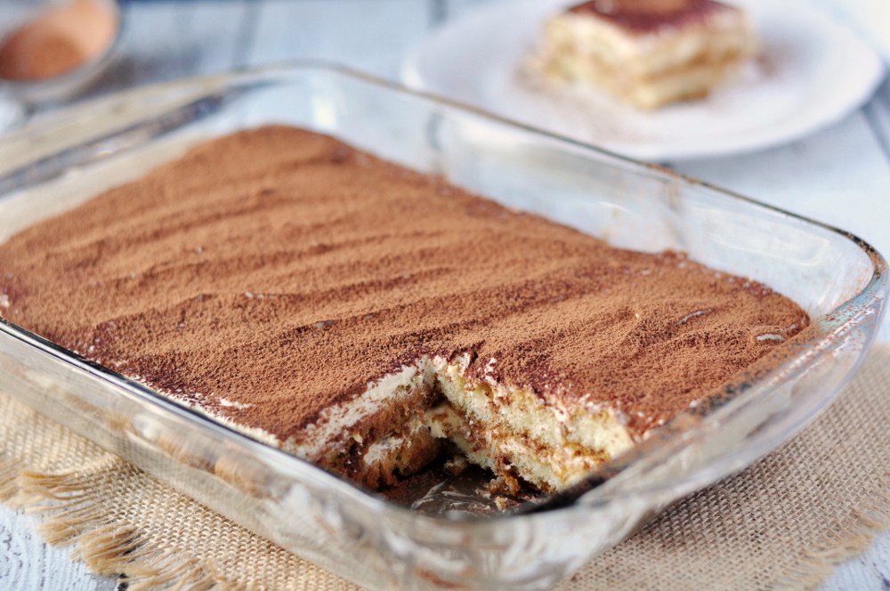

Tiramisu

Description
A light and refreshing dessert made with creamy marscapne cheese and coffee soaked
lady fingers.
Ingredients
- 6 egg yolks
- ¾ cup white sugar
- ½ teaspoon vanilla extract
- 1 ¼ cups heavy cream
- 1 pound mascarpone cheese, at room temperature
- ¼ cup strong brewed coffee, at room temperature
- 2 tablespoons rum
- 2 (3 ounce) packages ladyfinger cookies
- 1 tablespoon unsweetened cocoa powder
Directions
- In a medium saucepan, whisk together egg yolks and sugar until well blended. Whisk in milk and cook over medium heat, stirring constantly, until mixture boils. Boil gently for 1 minute, remove from heat and allow to cool slightly. Cover tightly and chill in refrigerator 1 hour.
- In a medium bowl, beat cream with vanilla until stiff peaks form.
- Whisk mascarpone into yolk mixture until smooth.
- In a small bowl, combine coffee and rum. Split ladyfingers in half lengthwise and drizzle with coffee mixture.
- Arrange half of soaked ladyfingers in bottom of a 7x11 inch dish. Spread half of mascarpone mixture over ladyfingers, then half of whipped cream over that. Repeat layers and sprinkle with cocoa. Cover and refrigerate 4 to 6 hours, until set.